Collect
Capture residual-stream activations from representative text or conversations.
Feature discovery from activation geometry
Non-Gaussianity Reveals Interpretable Directions in Language Models
We introduce ICA Lens, a practical workflow for efficient discovery, reliable annotation, and faithful evaluation of non-Gaussian directions in LLM residual-stream activations.
The central result
Along a typical random direction, natural-text activations look close to Gaussian. Along many interpretable directions, most contexts form a quiet background while a recurring pattern occupies a selective tail. ICA Lens searches for that structure directly.
01 / A toy example
At GPT-2 layer 0, a random projection of all 50,256 non-special token activations is nearly Gaussian. An ICA direction instead places a related family—neither, either, both, and between—in a sparse, distant tail while most tokens remain near zero.
Whitening equalizes variance, then ICA finds a rotation whose standardized projection is unusually non-Gaussian.
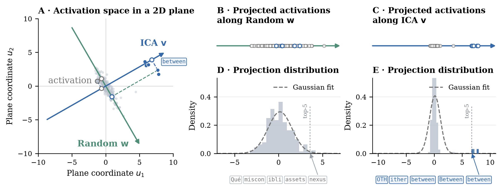
02 / Evidence across models
Across GPT-2 Small, Gemma 2 2B, and Qwen 3.5 9B Base, random directions remain near the Gaussian reference and PCA captures little heavy-tailed structure. Public SAE feature directions are already substantially non-Gaussian. ICA optimizes this property directly and finds the strongest heavy-tailed projections throughout the residual stream.
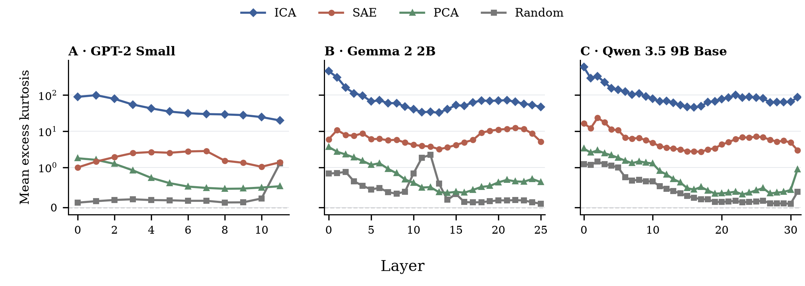
03 / Practical workflow
ICA Lens connects statistical discovery to inspectable evidence and downstream use in four concrete stages.
Capture residual-stream activations from representative text or conversations.
Center, whiten, and run GPU-parallel symmetric FastICA.
Store score statistics, the skewness-selected semantic tail, corpus occurrences, Logit Lens tokens, and optional R-Lens readouts.
Inspect new inputs, reconstruct activations, probe concepts, or intervene on generation.
Fit GPT-2 layer 8 from 100,000 Pile-10k activations for 50 iterations, profile the components, then apply the new Lens to held-out text. Every stage reports its runtime and artifact path.
04 / Interpretability
Human annotation tests whether convergent evidence supports a usable label. Automated annotation scales an explanation–prediction test across thousands of components.
Manual annotation
Annotators combine top activation contexts with Logit Lens and R-Lens vocabulary readouts, then use controlled counterfactual prompts when the evidence is ambiguous.
Automated interpretability
Following the Cunningham-style protocol, an explainer proposes a description from high-scoring examples and a simulator predicts token scores on held-out fragments. Agreement is measured by Pearson correlation.
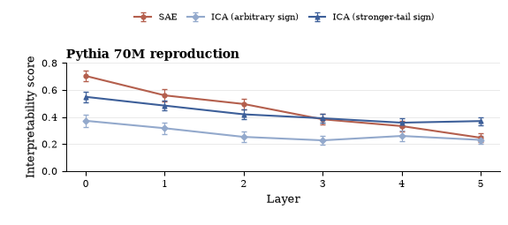
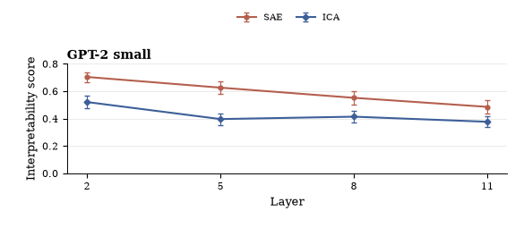
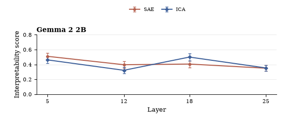
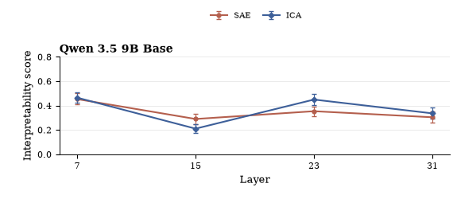
05 / The statistical link
The experiment follows the same 400 Qwen components—100 each from layers 7, 15, 23, and 31—throughout FastICA. Mean sign-corrected automated interpretability rises with non-Gaussianity and then saturates.
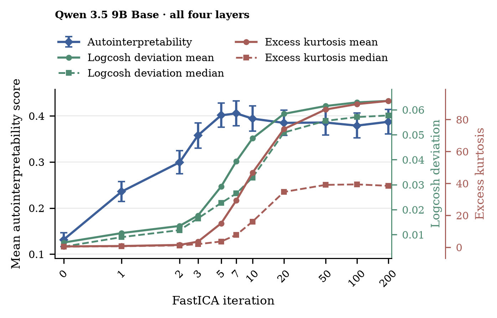
06 / ICA versus SAE
The comparison covers information preservation, sparse concept readout, and selective causal removal using matched public SAEs.
Sparse Reconstruction
Keeping only the largest coordinates, ICA is competitive with matched public SAEs and consistently stronger than PCA and random-direction baselines.
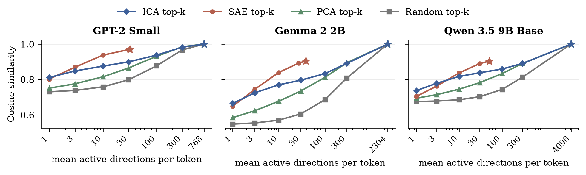
Sparse Probing
ICA outperforms the public SAE on GPT-2 Small and remains competitive on Gemma 2 2B and Qwen 3.5 9B Base.
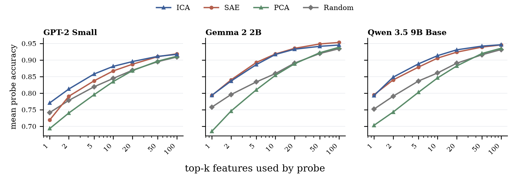
Targeted Probe Perturbation
TPP ablates coordinates associated with one target and measures the target-probe drop relative to non-target probes. ICA produces higher TPP scores than the matched public SAEs.
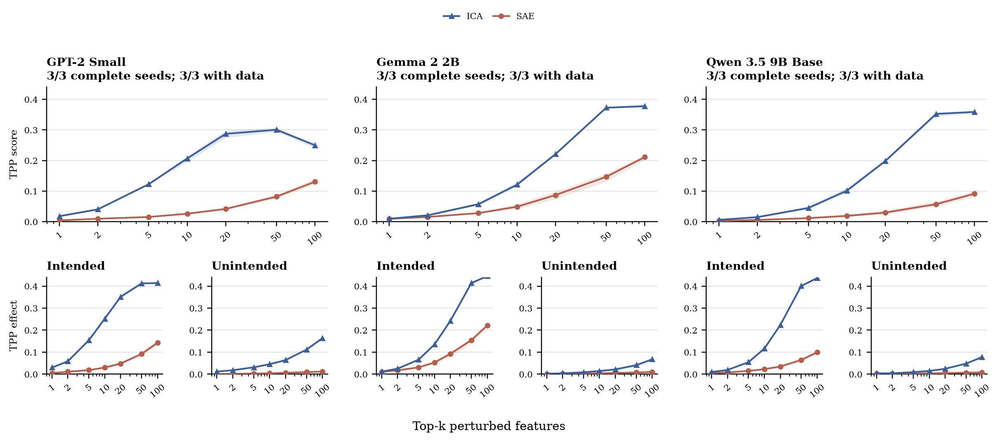
07 / Intervention
In the paper’s Qwen 3.5 9B Base case study, layer 26 component C9 is causally linked to French-language generation. Adding its writing direction moves an English prompt toward French; clamping the coordinate moves a French prompt toward English.
uses artificial neural networks to learn from data.
utilise des réseaux de neurones artificiels pour apprendre à partir de données.
utilise des réseaux de neurones artificiels pour apprendre à partir de données.
uses neural networks to learn from data.
08 / Practical efficiency
Reported fitting times use one million activations, 50 fixed FastICA iterations, and one NVIDIA GB10.
The practical advantage is fitting: ICA recovers one coordinate per residual-stream dimension without training a large overcomplete dictionary.
09 / Use ICA Lens
The Python package supports text, conversations, profiles, reconstruction, interventions, fitting, and publication of new lenses.
pip install icalens
from icalens import ICALens
lens = ICALens.from_pretrained(
"sida/icalens-gpt2-small-pile10k"
)
result = lens.analyze(
"The API accepts a JSON object and returns a response.",
layer=8,
)
result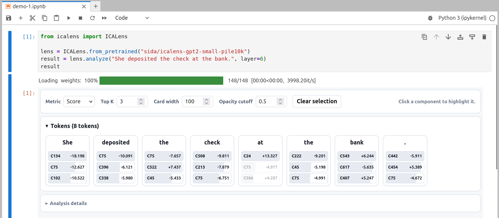
Paper and resources
Sida Liu and Feijiang Han
@article{liu2026nonGaussianity,
title={Non-Gaussianity Reveals Interpretable
Directions in Language Models},
author={Liu, Sida and Han, Feijiang},
journal={arXiv preprint arXiv:2606.11722},
year={2026}
}